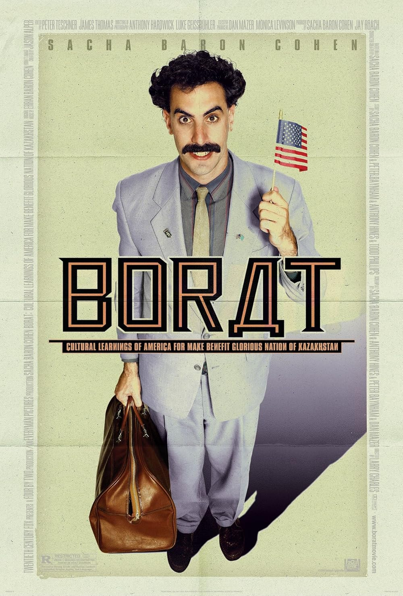

HOME
Borat is a 2006 mockumentary comedy film starring Sacha Baron Cohen as Borat Sagdiyev, a fictitious Kazakh journalist traveling through the United States to make a documentary. The film is known for its satirical humor and social commentary, as Borat interacts with real Americans who believe he is a foreigner with little understanding of American customs.
Company Credits: Four By Two Films, Everyman Pictures, Dune Entertainment
Release Date: November 3, 2006
Genres: Comedy, Mockumentary
Rating: R
Running time: 84 minutes